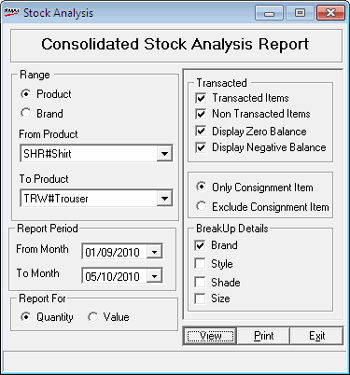

The Stock Analysis report prints monthly opening balance, stock in, stock out and closing balance, either as quantity or value, as chosen by you. It also gives the stock turn out ratio. A detailed report or a summarised one for all the items in stock, or for only those items transacted during the selected months, can be generated.
How to reach: Reports > Stock > Analysis
The Stock Analysis window is displayed.

Range: Select Product or Brand to specify the range of items. If you have selected Product, choose From Product and To Product from the respective lists. If you have selected Brand, choose From Brand and To Brand from the respective lists.
Report Period: By default, the From Month and To Month are the current Shoper date. You can enter any date range but the To Month cannot be greater than the Shoper date.
Report For: Select Quantity or Value to display the corresponding values in the report.
Transacted:
Only Transacted Items: Select to include transacted items alone in the report.
All Items: Select to include all items in the report.
Display Zero Balances: Select to display the items with zero stock quantity.
Display Negative Balances: Select to display the items with negative stock quantity.
Select Only Consignment Item or Exclude Consignment Item to generate the report for consignment items alone or for all items other than consignment items.
BreakUp Details: Select Brand, Style, Shade or Size to group the report accordingly.